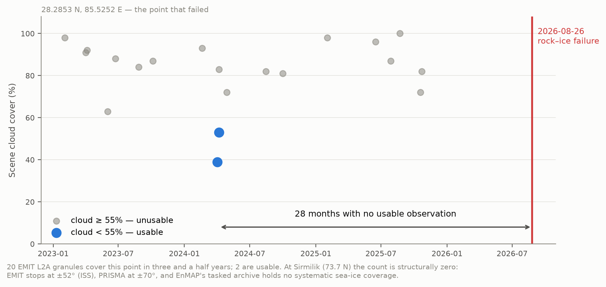
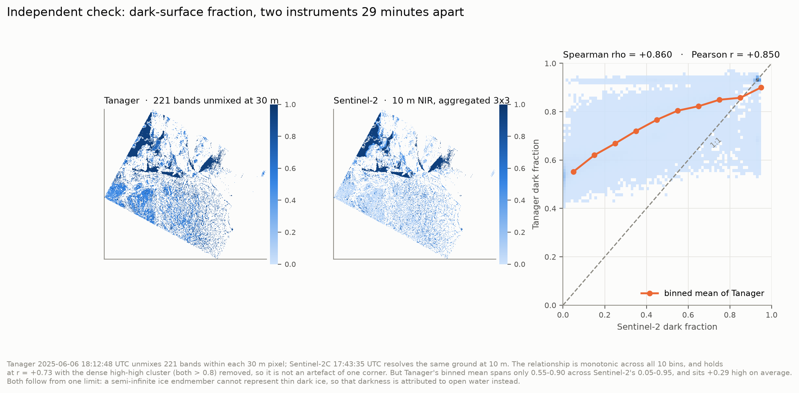

Tanager Open Data Competition 2026 · Scene 20250606_181248_58_4001, Sirmilik National
Park, Nunavut · Code, weights, figures and a script that re-checks the headline numbers
below: see Project Materials.
On 26 August 2026 a combined rock and ice slope failure on the north side of Langtang Lirung, Nepal, sent bedrock and glacier ice into the Lhende Khola. The debris temporarily dammed the river; the impoundment breached, and the flood ran nearly 100 km down the Bhote Koshi and Trishuli, destroying the Gyirong border crossing. As of 29 August more than 600 people were confirmed dead and more than 1,900 were missing in Nepal, with further deaths in Gyirong County, Tibet; the toll is still rising.
Two things it was not. Not a glacial lake outburst flood — no pre-existing lake failed. And not a clean glacier detachment of the 2016 Aru type: the scar shows a large volume of both ice and rock removed. This is the rock–ice avalanche class, the failure mode that is becoming more common as high-mountain permafrost degrades and the bedrock holding ice onto steep faces loses its cement.
That class is not a Himalayan problem; it occurs wherever ice sits on a steep slope, and part of its preconditioning is cryospheric and therefore spectral — grain coarsening, liquid water, impurity-driven albedo loss all change how much energy the ice absorbs. So we asked how often a spaceborne imaging spectrometer has looked at the slope that failed.
Twice in three and a half years. Of 20 EMIT L2A granules containing the source zone (28.2853 N, 85.5252 E), two fall below 55% cloud. The last usable look came 28 months before the failure. The result is insensitive to which of the two published source positions is used — they differ by 1.1 km, an EMIT granule is ~75 km across, and both return the same 20 granules and the same 28-month gap.
At 73 N the number is not small but structural: zero. EMIT flies on the ISS, which reaches only ±52°; PRISMA acquires only within ±70°; EnMAP's proposal-driven archive holds no systematic sea-ice coverage. No spaceborne imaging spectrometer systematically observes the Arctic sea-ice zone. And querying all 153 scenes of the Tanager Open STAC catalogue (as of 29 August 2026) against the OpenStreetMap glacier layer returns zero intersections. The open archive contains no glacier.
That absence is the argument, and the prize is what can fix it.

Since the archive has no glacier, we built and validated the retrieval on the cryosphere
data that does exist — Arctic sea ice in melt. tanager-cryo inverts Tanager reflectance
into sub-pixel fractions of solid ice/snow, melt pond and open water; the effective
absorption length that sets grain size; pond depth; and impurity load. Scenes are read
through Planet's own xarray-hyperspectral backend.
Forward model: Kokhanovsky–Zege asymptotic radiative transfer for the solid surface, a two-way Beer–Lambert water column over a scattering floor for ponds, ice constants from Warren & Brandt (2008), water from Segelstein (1981). There is no field campaign at Sirmilik on 2025-06-06, so rather than invent labels the network trains on 150,000 spectra from that forward model — standard practice when validation data are absent — and the honesty is pushed into the uncertainty instead.
The decisive Tanager feature is surface_reflectance_uncertainty, the per-pixel,
per-band 1σ most workflows read past. We used it three times:
The network emits a predictive variance per parameter under a Gaussian NLL. This matters because three of six parameters are only conditionally identifiable — pond depth is meaningless where there is no pond. A point estimator returns confident nonsense there.
On 30,000 held-out synthetic spectra: melt pond fraction RMSE 0.0062, snow/ice 0.0165, open water 0.0185, and — evaluated where the host endmember is present — absorption length (log₁₀ m) 0.0224, melt pond depth 10.1 mm, impurity load 5.62. Across all six parameters the variance of the standardised residual is 1.05–1.08 against a nominal 1.0, with 68% and 95% coverage at 0.65–0.70 and 0.94–0.96 against nominal 0.683 and 0.950 — the usual failure of a heteroscedastic network, severe unflagged overconfidence, is reduced here to a quantified few per cent.
Those are the numbers after the correction described in §4. Before it, the same tables read better — pond fraction RMSE 0.0030, R² = 1.000 on every parameter, calibration equally clean. The flattering version was wrong, and no synthetic test could have told us.
Sentinel-2C imaged this scene at 17:43:35 UTC on 2025-06-06; Tanager at 18:12:48. Twenty-nine minutes apart. Both products sit in EPSG:32617 and Tanager's 30 m pixel edges fall on Sentinel-2's 10 m grid lines, so every Tanager pixel contains exactly 3×3 Sentinel-2 pixels with no resampling anywhere in the comparison. Tanager infers the sub-pixel fractions spectrally, by unmixing; Sentinel-2 resolves them spatially. Different information channel, same ground, same minute.
(ICESat-2 was the first choice — an active laser is a cleaner reference. All three tracks crossing this scene in June 2025 are flagged 100% cloud-covered, every height a fill value. The Arctic is hard to observe from orbit; that is the theme of this memo.)
The first comparison came back anti-correlated: r = −0.68 on the solid fraction. A green-band cross-check ruled out geometry — Tanager and Sentinel-2 green agree at r = 0.814 with zero offset, and a shift test confirms the alignment. The disagreement was real, and its cause was a domain gap invisible from inside the synthetic world: Tanager's instrument σ is 0.0013, but the forward model reproduces real sea-ice reflectance only to about 0.03. The network had been trained under noise up to 0.005 and was being asked, at inference, to interpret spectra deviating from its training manifold by five times that.
White noise at the right amplitude would have been the wrong repair — it teaches a network to be uncertain, not robust, and forward-model error is not white but a smooth bias in spectral shape. Training was reworked to inject smooth perturbations built from low-order Legendre polynomials, scaled to that measured 0.03. The perturbations are 16× smoother band-to-band than white noise of the same amplitude, and lifted synthetic coverage of the observed spectra the last of the way, 99.7% to 100%. Synthetic scores got worse, as they should. The comparison with Sentinel-2 flipped sign.
Where it now stands. Spearman ρ = +0.860 on the dark-surface fraction, monotonic across all ten bins, and still r = +0.73 with the dense high-high cluster removed — not an artefact of one corner. But the binned mean of Tanager spans only 0.55–0.90 across Sentinel-2's 0.05–0.95, and reads +0.29 high on average.
That residual disagreement is a physical limit, not a bug, and we chased it far enough to say so. Over pixels Sentinel-2 resolves as continuous ice, the observed spectrum has exactly the shape of the semi-infinite model at half its amplitude: the observed/modelled ratio is 0.52 at 421 nm and 0.52 at 1032 nm. A grey darkening like that is what thin ice over dark ocean produces — and it is mathematically indistinguishable from mixing in open water. We implemented a finite-thickness ice endmember to separate them; it bought no identifiability, only a relabelling, and its transmittance shape fits the observations at RMSE 0.195. At 30 m, passive optics cannot separate open water from thin dark ice. The retrieval's "open water" is really a dark-surface fraction, and we report it as such.
Sirmilik, 2025-06-06: 332,535 valid pixels. Medians 0.28 solid, 0.16 pond, 0.56 dark surface, pond depth 0.05 m — read the dark fraction with §4 in mind.
We do not trust a network that returns a number for every pixel. Retrieved parameters are pushed back through the forward model and compared to the observation under a combined error budget. That exposed the most useful number in this work:
Forward-model error 0.0354 in reflectance; Tanager instrument σ 0.0013. The retrieval is forward-model limited by a factor of 27.
Tanager resolves structure a three-endmember model cannot yet exploit. Weighting the fit by instrument σ alone rejects every pixel, because it asks a 3.5% model to agree with a 0.1% measurement. With both terms, 30.1% of pixels are explained at χ²ᵥ ≤ 4. What is rejected is largely the snow-covered land in the south of the scene, which an ice model has no business describing — the goodness-of-fit panel finds that boundary unaided.

Sentinel-2 is the right comparison for polar work: free, near-daily at 73 N, and the sensor operational sea-ice products run on. EMIT and PRISMA cannot acquire this scene (±52° and ±70°), so we quantify their band sets instead: degrading Tanager to each sensor's published sampling and FWHM under the identical protocol leaves retrieval skill statistically unchanged — RMSE ratios 0.95–1.03 across all six parameters. The Arctic gap is orbital, not spectral. Sentinel-2's 10 L2A bands are another matter. Degrading with the official ESA response functions (COPE-GSEG-EOPG-TN-15-0007), holding scenes, forward model, architecture, schedule and seeds fixed — noise propagation favouring the degraded sensor throughout, so every penalty is a lower bound:
| Quantity | Penalty for using Sentinel-2's bands |
|---|---|
| Grain size (log₁₀ L) | 13.1× |
| Impurity load | 5.5× |
| Melt pond fraction | 5.2× |
| Snow / ice fraction | 4.8× |
| Open water fraction | 4.1× |
| Melt pond depth | 1.8× |
Grain size degrades most because it lives in the ice absorption features at 1030 and 1240 nm, and Sentinel-2 L2A has nothing between 865 and 1614 nm. Pond depth degrades least, 1.8×, because Sentinel-2 does carry six red/near-infrared bands — we report that rather than round it away. The cliff sits between multispectral and imaging spectroscopy, not between 7.4 and 5 nm sampling: a spectrally equivalent public sensor already exists — it simply cannot see the Arctic.
Sea ice is an analogue, not the target; the archive gave no alternative, and that is the point. The retrieved "open water" is a dark-surface fraction that includes thin ice, per §4; treat it as such. The per-class check is weaker still for ponds: against a hard Sentinel-2 classification, whose thresholds score partially wet 10 m pixels as dry, the pond fraction anti-correlates (r = −0.34); only the combined dark fraction supports a clean cross-instrument comparison, which is why §4 reports that. Impurity load should be read with caution — the forward model runs 0.03–0.06 dark in the visible and this parameter is best placed to absorb that bias. Grain diameter converts from absorption length through a stated shape factor (B = 3.62), carried as a file attribute. Coarse-resolution pond retrieval is a mature field (MERIS, MODIS, OLCI); what is new here is spaceborne 30 m with calibrated per-pixel uncertainty and an independent same-day cross-check.
And the honest scoping point: Langtang was a rock–ice failure. This retrieval characterises the ice, not the bedrock or the permafrost that also gave way. It addresses one component of the preconditioning, not the whole of it. We would rather say that than imply a cryosphere product forecasts rock-slope stability.
Tanager's revisit does not support early warning and we do not claim it. A glacial lake can be watched for years; a rock–ice slope gives minutes — which is exactly why the monitorable quantity is the preconditioning. That is what this supports.
Point it at ice. The tool is built, validated and calibrated; the archive has no glacier to run it on. The Lhende Khola alone has now flooded twice in thirteen months — a supraglacial-lake outburst in July 2025 (DHM/ICIMOD), this rock–ice failure in August 2026: two initiation mechanisms, one valley. Ten tasked scenes over glaciated hazard corridors — Langtang and the Bhote Koshi above Gyirong first, then Cordillera Real above La Paz, the Karakoram, the Caucasus — would convert a validated Arctic retrieval into a preconditioning baseline for terrain that is actively killing people. Repeat coverage of Sirmilik across a melt season would give the 30 m pond-evolution time series no spaceborne spectrometer has ever acquired.